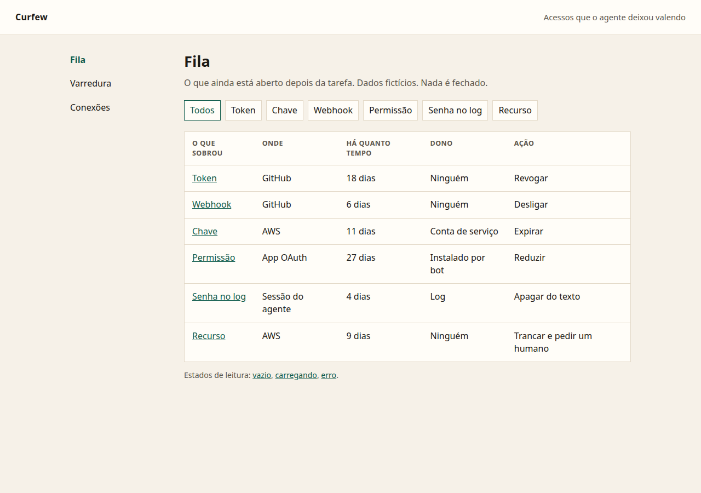
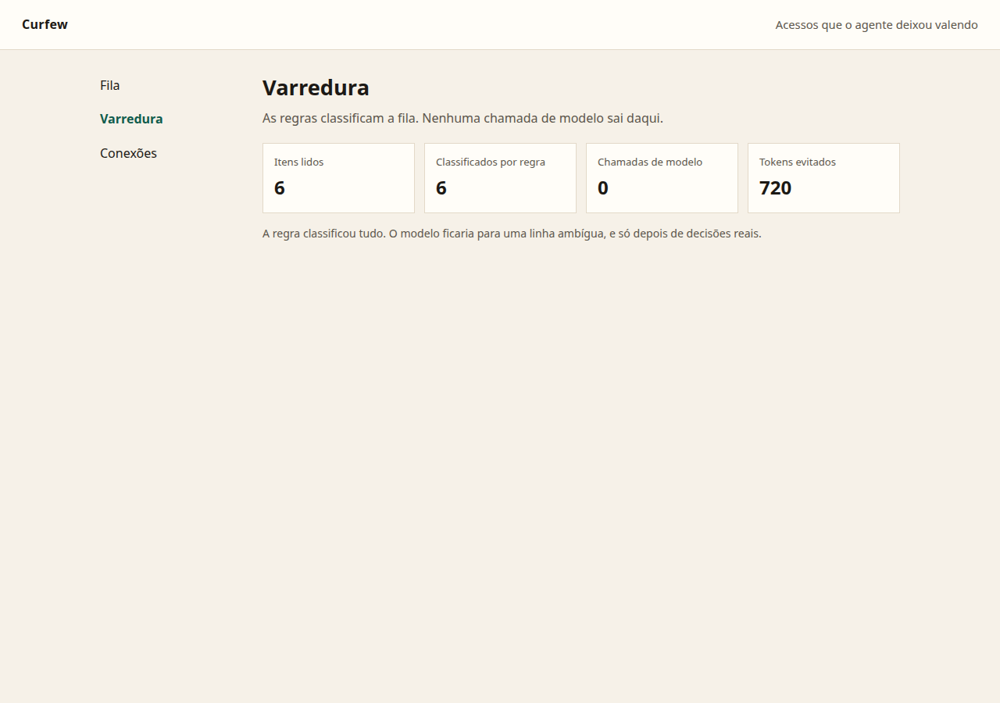

Fluxo de segurança da informação
Cada acesso esquecido vira uma linha com sistema, idade, dono e ação: revogar, expirar, desligar, reduzir, apagar do texto ou trancar e pedir um humano. Plataforma executa. Segurança vê a fila com data.
Segurança da informação
Token de GitHub, chave de AWS, webhook e senha escrita no log da sessão ficam abertos depois da tarefa. A Curfew coloca essa sobra na fila que o time de segurança já deveria ver: idade, dono e a ação. O valor do segredo não entra na fila.
A ferramenta entra onde a segurança da informação já decide o que continua aberto. Não é mais uma lista que alguém monta na sexta.
Cada acesso esquecido vira uma linha com sistema, idade, dono e ação: revogar, expirar, desligar, reduzir, apagar do texto ou trancar e pedir um humano. Plataforma executa. Segurança vê a fila com data.
A janela é o tempo em que o acesso segue válido. Um token de 18 dias sem dono, uma chave de 11 e uma permissão de admin de 27 dias continuam abrindo GitHub e AWS depois que o pull request já entrou.
Senha no log do agente e chave ainda capaz de ler a conta são vazamento em curso. A linha aponta o texto e a chave. O segredo em si não é copiado para a fila, o log ou a URL.
A leitura é o primeiro passo. Fechar o acesso só acontece quando a empresa autoriza essa ação.
O agente usou um token, uma chave ou um webhook e ninguém recolheu.
GitHub e AWS entram em modo leitura. A regra classifica idade, dono e escopo.
Cada linha já diz o que fazer. Produção trava e espera um humano.
A empresa vê o acesso. Não vê o valor da chave, do token ou da senha.
Dados fictícios. Nada é lido de uma conta real e nada é fechado. O log da varredura chega linha a linha, no horário de Brasília.




Esta versão é a fila para aprovação. Conector, credencial de cliente, deploy e fechamento de acesso ficam para o corte seguinte, com um sim explícito.